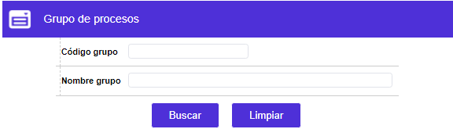
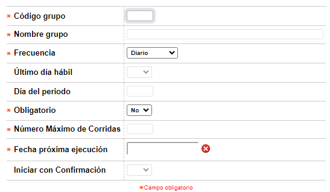
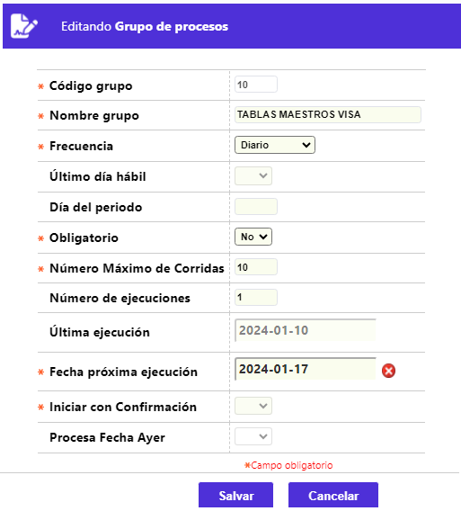
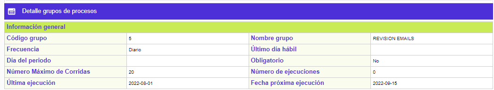
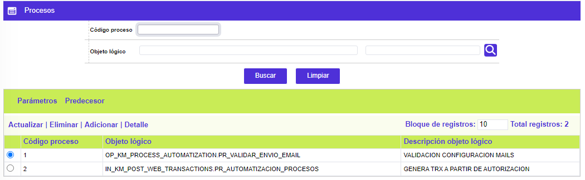
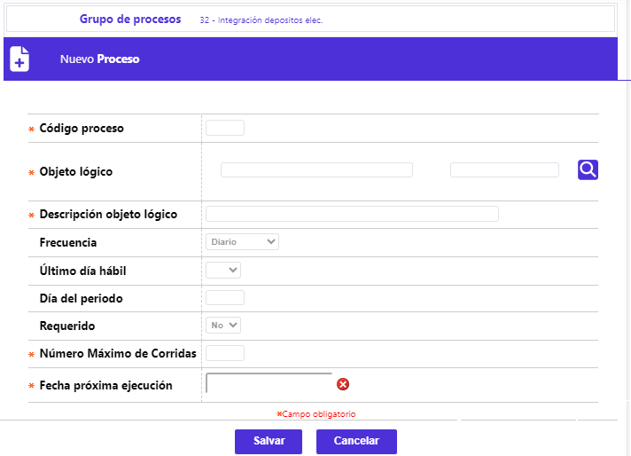
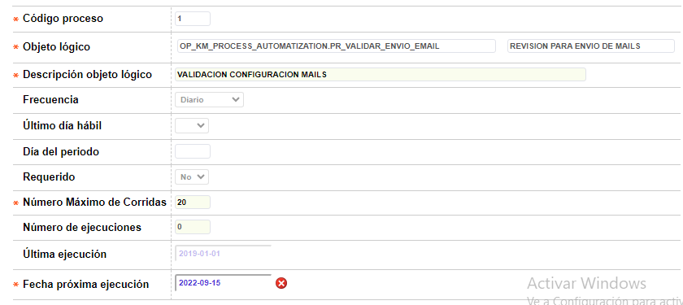
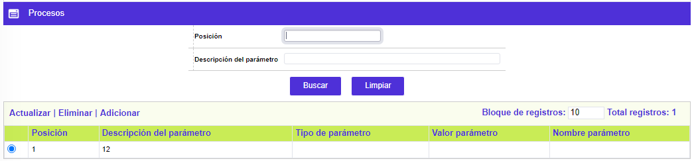
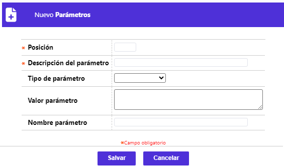
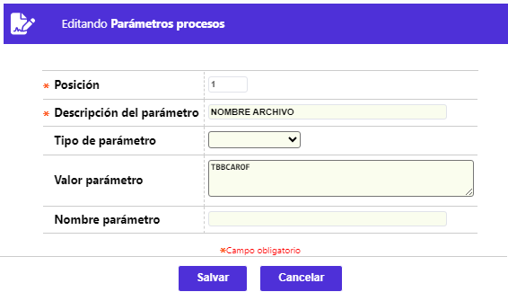

Grupos de procesos
Mediante este formulario se habilita el mantenimiento y consulta de la tabla que contiene la parametrización de los diferentes grupos de procesos, conformados por procedimientos con idéntica periodicidad de ejecución y que funcional o lógicamente, la entidad acorde con sus criterios, desee hacer concordar; esta secuencialidad facilita la definición de precedencia tanto a nivel de grupo como de procesos, dando la posibilidad de priorizarlos e interrelacionarlos y determinar para cada grupo los procesos específicos que los conforman.

El formulario cuenta con un filtro que le permite al usuario hacer consultas selectivas por el código del gurupo, el nombre del grupo, o el grupo predecesor. Para este último campo, se provee una lista de valores de la cual el actor puede seleccionar el grupo que precede a aquel que se desea consultar.

El formulario contiene las opciones Actualizar, Eliminar, Adicionar y Detalle. Cuenta también con el hipervínculo Procesos.
Adicionar: Si el usuario invoca la opción Adicionar se despliega un nuevo formulario.

Descripción de campos
Código grupo |
Campo numérico de cuatro dígitos, obligatorio, en el que se registra la serie o número que identifica cada uno de los grupos de procesos. |
Nombre grupo |
En este campo alfanumérico obligatorio, se registra el nombre o breve descriptivo que mejor indique el propósito del grupo. |
Predecesor |
Campo con lista de valores de la cual se selecciona cual de los grupos previamente creados es pre-requisito o requiere ser ejecutado antes de poder ejecutar el grupo actual. Los grupos que sean tipo 'Especial', no pueden tener ni ser predecesores de otros grupos. |
En este campo tipo combo, se señala si el grupo aplica o no como punto de chequeo, lo cual indica que una vez termine su ejecución el sistema deberá informar al usuario, con el fin de que éste decida si continúa o no con la ejecución de la automatización de grupos de procesos. |
|
| Tipo ejecución | Este campo tipo combo permite seleccionar entre Secuencial o Paralelo, la forma como se ejecutarán los procesos del grupo, bien sea manual o automáticamente. |
| Frecuencia | Campo tipo combo obligatorio, del cual se debe seleccionar entre Diario, Semanal, Mensual, Anual, Facturación y Especial, la frecuencia con la cual deben ser ejecutados los procesos del grupo. La combinatoria entre el valor aquí señalado y los valores de los campos Fecha última ejecución, Fecha próximaejecución, último día hábil y Día del periodo, determinarán que aparezcan o no dentro de la opción Ejecución de procesos para una fecha determinada. Cuando se selecciona 'Especial', indica que dicho grupo se reflejará en la opción Ejecución de procesos especiales y por allí mismo se podrá ejecutar de forma manual únicamente. |
Ultimo día hábil |
Este campo se activa únicamente cuando la periodicidad seleccionada es semanal, mensual o anual, y contiene un combo con las opciones Si o No para indicarle al sistema si ejecuta dicho grupo de procesos el último día hábil bien sea de la semana, del mes o del año, ó se ejecuta en un día diferente. |
Día del periodo |
Campo que solamente se activa cuando la periodicidad sea Semanal, Mensual o Anual, y cuando el campo último día hábil sea NO. En él debe señalarse el número del día dentro del periodo correspondiente, en que se requiera ejecutar el grupo. |
Post calendario |
En este campo tipo combo se indica Si o No el grupo puede ser ejecutado con fecha del día anterior. |
Fecha próxima ejecución |
Campo en formato YYYY-MM-DD en el que se registra, acorde con la periodicidad y fechas hábiles, la siguiente fecha en que debe ser ejecutado el grupo. |
Actualizar: si el usuario selecciona un registro e invoca la opción Actualizar se despliega un formulario en el cual el único campo NO modificable es el Código grupo.

Detalle: si el usuario selecciona un registro e invoca la opción Detalle se despliega un formulario con toda la información del registro y en el cual ninguno de sus campos es modificable.

Procesos: Si el usuario invoca el hipervínculo 'Procesos', se despliega un nuevo formulario con el mismo nombre y en el que se registran todos los procesos que componen o integran cada uno de los grupos definidos.

El formulario contiene las opciones Actualizar, Eliminar y Adicionar. También contiene el hipervínculo Parámetros.
Adicionar: Si el usuario invoca la opción Adicionar se despliega un nuevo formulario con los siguientes campos:

Descripción de campos
Código proceso |
Campos de salida en los que se muestra la combinatoria correspondiente al producto para el cual se está parametrizando la condición de no reporte a centrales de riesgo. |
Objeto lógico |
Campo alfanumérico obligatorio en el que se registra el nombre del objeto asociado al proceso a parametrizar. |
Descripción objeto lógico |
En este campo alfanumérico obligatorio, se registra una breve descripción de la función que cumple el proceso a parametrizar. |
Marca |
En este campo con lista de valores se selecciona la franquicia para la cual aplica el proceso. Si se deja en blanco indica que aplica para todas las franquicias. |
Localización |
Campo informativo no obligatorio, que indica el idioma y país para los cuales aplicará el proceso en el sistema (Español Colombia, Inglés Colombia, Inglés Estados Unidos). Esta lista se ampliará a medida que existan instalaciones en otros países y/o idiomas |
Requerido |
Campo tipo combo que permite seleccionar entre Si o No el proceso es de obligatoria ejecución, bien sea para continuar con la ejecución de otros procesos o para cambiar la fecha calendario del sistema. |
Rol de negocios |
Campo tipo combo en el cual se puede seleccionar entre Emisor, Adquirente, Núcleo, Débito o Servicios, el rol de negocios para el cual se está parametrizando el proceso. |
Actualizar: si el usuario selecciona un registro e invoca la opción Actualizar se despliega un formulario en el cual el único campo no modificable es Código proceso.


El formulario contiene las opciones Actualizar, Eliminar y Adicionar.
Adicionar: Si el usuario invoca la opción Adicionar se despliega un nuevo formulario.

Descripción de campos
Posición |
Campo numérico de tres dígitos, obligatorio, en el que debe registrarse el mismo valor asociado al parámetro dentro del programa. |
Descripción del parámetro |
En este campo alfanumérico se registra una breve descripción del parámetro asociado al proceso. |
Tipo de parámetro |
Campo tipo combo del cual se puede seleccionar entre Archivo de entrada, Archivo de salidaó No es archivo la característica propia del parámetro. |
Valor parámetro |
En este campo se registra el valor asociado al parámetro dentro del programa, como por ejemplo el nombre con el cual se va a reconocer un archivo a cargar. |
Nombre parámetro |
Campo que aplica para los reportes, y corresponde a parámetros diferentes al de Empresa, Idioma, Nombre del reporte y Usuario, y que se deben ubicar dentro del programa. |
Actualizar: si el usuario selecciona un registro e invoca la opción Actualizar se despliega un formulario en el cual el único campo NO modificable es la Posición.
